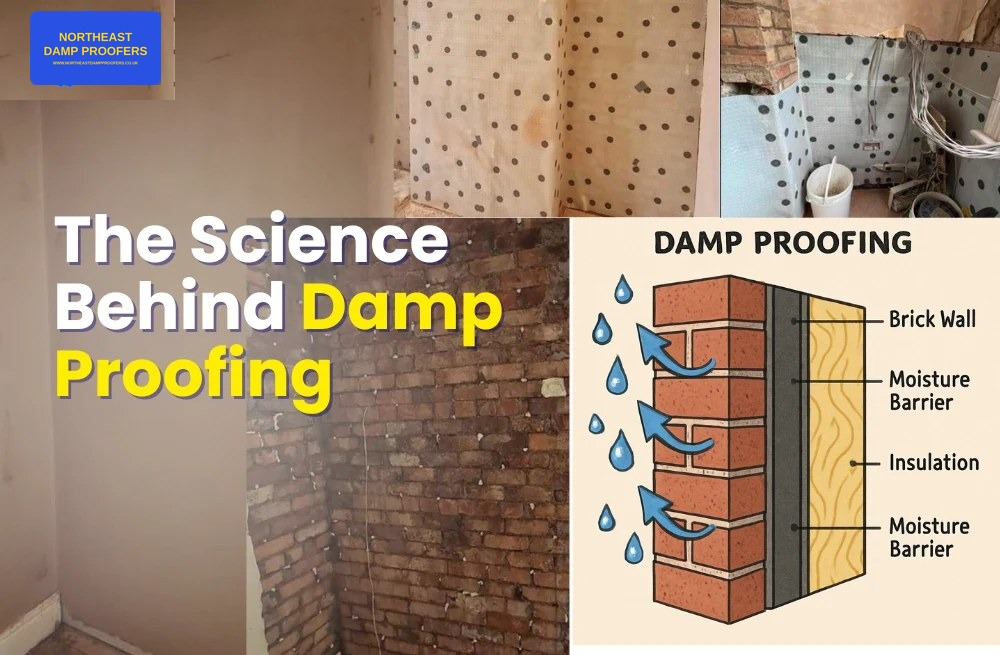
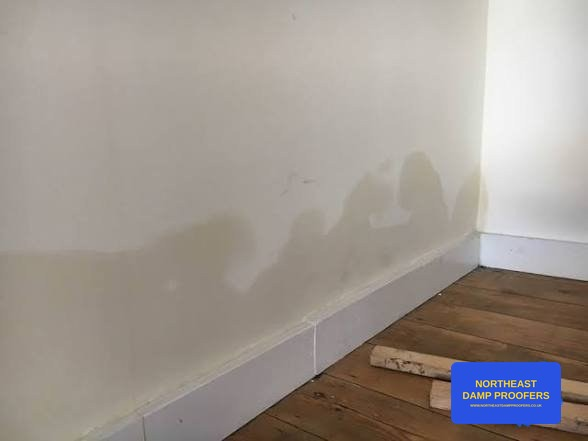
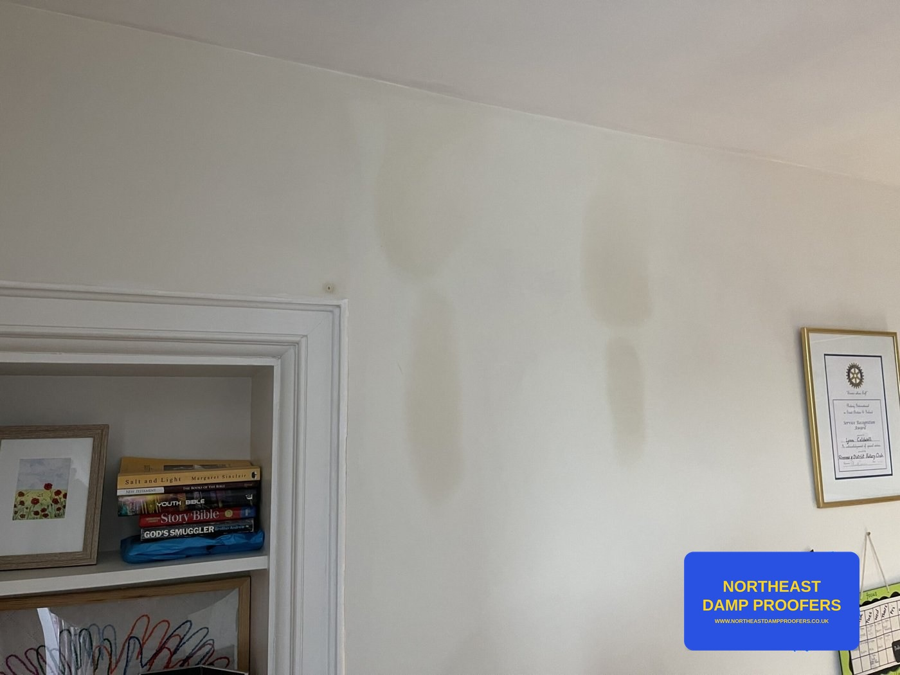
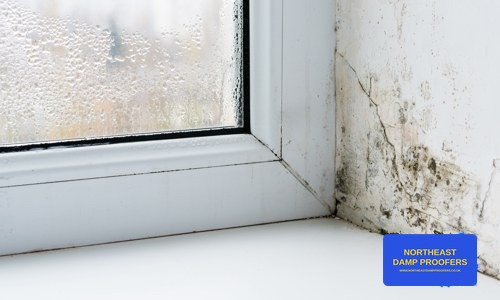
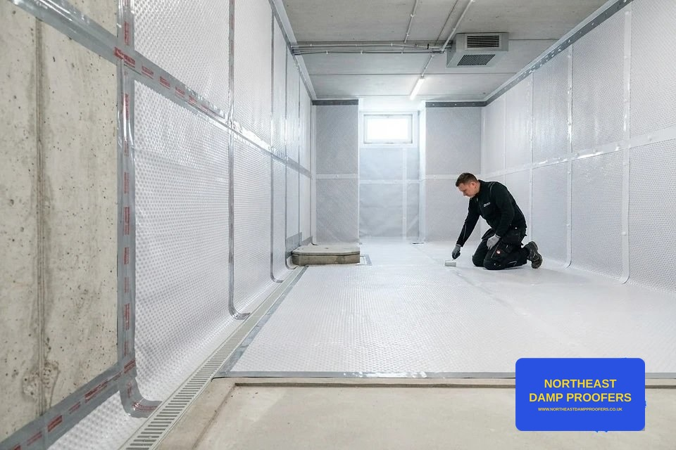
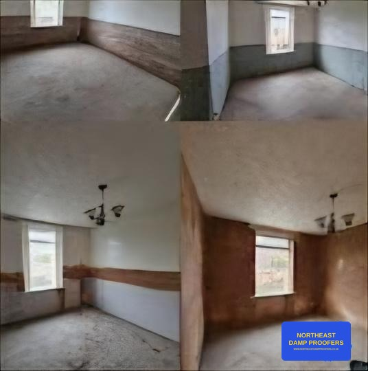

What we do
Damp, Mould & Waterproofing Services
Eight damp and waterproofing services across Newcastle, Gateshead, Sunderland and Durham, from a local team who find the cause before recommending a fix.
Short answer: Northeast Damp Proofers diagnoses and treats damp in homes across Newcastle, Gateshead, Sunderland, Durham, Tyneside and Northumberland. Every job starts with a free inspection: we take moisture readings, find the real cause and explain it in plain English. Surveys are carried out by Jeff Webb, a PCA Qualified Technician in Damp and Timber (PCAQT, Certificate No. 957), or Dan, who is based in Durham. We only recommend treatment that fixes the cause, which is often simpler than a new damp-proof course. If you need it in writing, a full damp survey report starts from £150.
Which service do I need?
Start with what you can see. This is a guide to the most likely cause, not a diagnosis; readings on site confirm it.
| What you're seeing | Most likely cause | Service |
|---|---|---|
| Tide mark, peeling paint or crumbly plaster up to about a metre on ground-floor walls | Rising damp, or a bridged damp-proof course | Rising damp treatment |
| Damp patch that appears or grows after heavy rain | Penetrating damp from gutters, pointing, render or roof | Penetrating damp |
| Black mould on cold walls, ceilings, window reveals or behind furniture | Condensation and poor ventilation | Condensation & mould |
| Wet, musty cellar or basement you want to use | Water through below-ground walls | Waterproofing |
| Damp flagged on a homebuyer survey or mortgage valuation | Needs a specialist to confirm | Damp survey report |
| Soft skirting, sagging floor or fungus on timber | Wet rot or dry rot from long-term damp | Repair work |
| Not sure | – | Free damp inspection |

Damp Proofing
In short: damp proofing means stopping moisture getting into your walls and floors, but the right method depends on where the water is coming from.
Comprehensive damp-proofing solutions to protect your property from moisture ingress. We assess the cause of the problem before recommending a treatment, using modern chemical damp-proof courses and membrane systems installed to manufacturer specification.
Read more: Has my damp-proof course failed?

Rising Damp Treatment
In short: genuine rising damp is less common than people think. We confirm it with readings before injecting a new damp-proof course.
Rising damp occurs when groundwater travels up through a wall via capillary action. We diagnose it accurately using calibrated moisture meters, then install a new damp-proof course and replace affected plaster to stop the problem returning.
Read more: Has my damp-proof course failed? Why it's often just bridged · Condensation or rising damp?

Penetrating Damp
In short: if a damp patch appears after rain, water is getting in from outside. Fix the entry point and the wall can dry out.
Penetrating damp is caused by water entering from outside — through defective render, pointing, gutters or roofing. We identify the entry point and carry out the repairs needed to keep water out for good, not just treat the symptoms.
Read more: Damp patch after heavy rain?

Condensation & Damp Advice
In short: most black mould in North East homes is condensation, and it is fixed with ventilation and moisture control, not damp-proofing chemicals.
Condensation is the most common cause of damp and mould in homes, driven by poor ventilation and everyday moisture. We provide practical, honest advice on ventilation improvements and, where needed, mechanical extraction to bring humidity under control.
Read more: Black mould in winter: condensation or rising damp? · Awaab's Law for tenants and landlords

Waterproofing
In short: some damp is normal in an old cellar. You only need tanking or a membrane if you want to use the space as a dry room.
Basements and cellars need specialist waterproofing to be usable, dry living or storage space. We install tanking and cavity drainage membrane systems designed to manage water ingress and keep subterranean spaces genuinely dry.
Read more: Cellars in older Newcastle homes
Free Damp Inspection
In short: a free, no-obligation visit to find out what is causing your damp before you spend anything.
Every job starts with an accurate diagnosis. We'll visit, assess the affected area with a moisture meter, and talk you through what's causing it and what it would take to fix — no cost, no obligation.
Read more: Book a free inspection
Damp Survey Report
In short: a written report of the readings, causes and recommended fixes, from £150.
A full written damp survey for when you need more than a quick opinion — ideal before buying or letting a property, for solicitors, landlords or insurance purposes. Combines a thorough inspection with moisture meter readings across every affected area.

Damp-Related Repair Work
In short: once the cause is fixed, we repair the plaster, skirting and timber the damp has damaged.
Damp often leaves damaged plaster, skirting, flooring or timber behind. Once the underlying cause is treated, we carry out the repair and making-good work needed to restore the affected area — leaving it dry, sound and ready to decorate.
Common questions about our services
Which damp service do I need?
Usually you won't know until the cause is found, and that's the point of the first visit. Damp low on a ground-floor wall can be rising damp, but it's just as often a bridged damp-proof course, a leak or raised ground levels. Patches that appear after rain point to penetrating damp. Black mould on cold walls, ceilings and window reveals is usually condensation. We take moisture readings, explain the cause and then recommend the service that fixes it.
Who carries out the survey?
Jeff Webb, a PCA Qualified Technician in Damp and Timber (PCAQT, Certificate No. 957), or Dan, who is based in Durham. We're a small local team, so the person who inspects your home is the person who explains the findings.
Is the damp inspection really free?
Yes. The free inspection is a visit with a visual check, moisture meter readings, a verbal diagnosis on site and a no-obligation quote for any work needed. If you need a full written damp survey report, for example before buying, for a solicitor, a landlord or insurance, that starts from £150.
Do you always recommend a chemical damp-proof course?
No. Injecting a new damp-proof course only helps when rising damp is the real cause. If the damp comes from a blocked gutter, defective pointing, a leak, bridging or condensation, we tell you that and fix that instead. Our article on whether a damp-proof course has failed explains why many are simply bridged.
Can you get rid of black mould for good?
Cleaning mould only removes the symptom. To stop it coming back, the moisture has to be controlled: usually better ventilation and extraction, sometimes positive input ventilation, and fixing any cold spots or water getting in. We measure humidity and look at ventilation before recommending anything.
Which areas do you cover?
Newcastle upon Tyne, Gateshead, Sunderland, Durham, North and South Tyneside and Northumberland, including Washington, Chester-le-Street, Houghton-le-Spring, Jarrow, Hebburn and Birtley.
Are you the same company as North East Damp Proofing?
No. We're Northeast Damp Proofers, Jeff and Dan's independent team, and we're not connected to any similarly named firm. You can reach us on 07446 522034 or at info@northeastdampproofers.co.uk.
Not sure which service you need?
Book a free, no-obligation inspection and we'll tell you exactly what's going on and how to fix it.